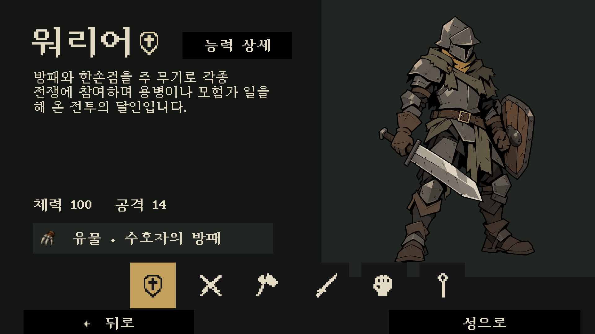

<!doctype html><html lang="ko"><meta charset="utf-8"><meta name="viewport" content="width=device-width,initial-scale=1"><title>Behemoth · Angular 01 두 화면 시안</title><style>*{box-sizing:border-box}body{margin:0;background:#151715;color:#e4dbc5;font:16px system-ui,sans-serif}header{padding:24px 32px;display:flex;justify-content:space-between;align-items:end;gap:20px}h1{font-size:23px;margin:0 0 6px}p{color:#aaa991;margin:0}nav{display:flex;gap:8px;flex-wrap:wrap;padding:0 32px 18px}button,select{padding:11px 18px;border:1px solid #5b604b;color:#e4dbc5;background:#272922;border-radius:4px;font:inherit;cursor:pointer}button.on{color:#151715;background:#c3a15d;border-color:#c3a15d}main{padding:0 32px}figure{margin:0;background:#101210;border:1px solid #3c4035}img{display:block;width:100%;height:auto;max-height:calc(100vh - 240px);object-fit:contain}footer{padding:18px 32px;color:#aaa991;font-size:14px}a{color:#e1bd75}small{display:block;margin-top:8px}</style><header><div><h1>BEHEMOTH · ANGULAR 01</h1><p>캐릭터 페이지 / 탐험 진입 첫 화면 · 실제 Unity 실행 캡처</p></div><a href="README.md">시안 범위</a></header><nav><button id="characters" class="on" onclick="show('Selection-'+select.value,'characters')">캐릭터 페이지</button><select id="select" onchange="show('Selection-'+this.value,'characters')"><option value="Warrior">워리어</option><option value="Rogue">로그</option><option value="Barbarian">바바리안</option><option value="Samurai">사무라이</option><option value="Monk">몽크</option><option value="Wizard">위자드</option></select><button id="main" onclick="show('Main-First-Navigation','main')">탐험 첫 화면 · 워리어</button><button id="intro" onclick="show('Main-First-Introduction','intro')">진입 안내창</button></nav><main><figure><a id="full" href="Screenshots/Selection-Warrior.png" target="_blank"></a></figure></main><footer>아트 방향을 판단하기 위한 별도 씬입니다. 전투 애니메이션·다른 방·몬스터는 아직 확장하지 않았습니다.<small><a href="../../../Assets/Scenes/Trials/Angular01_Characters.unity">캐릭터 시안 씬</a> · <a href="../../../Assets/Scenes/Trials/Angular01_Main.unity">탐험 시안 씬</a> · <a href="Prompts.json">Built-in ImageGen 프롬프트</a> · <a href="Live.txt">실행 확인 기록</a></small></footer><script>const select=document.querySelector('select');function show(name,tab){document.querySelector('#screen').src='Screenshots/'+name+'.png';document.querySelector('#full').href='Screenshots/'+name+'.png';document.querySelectorAll('button').forEach(b=>b.classList.toggle('on',b.id===tab))}</script></html>
